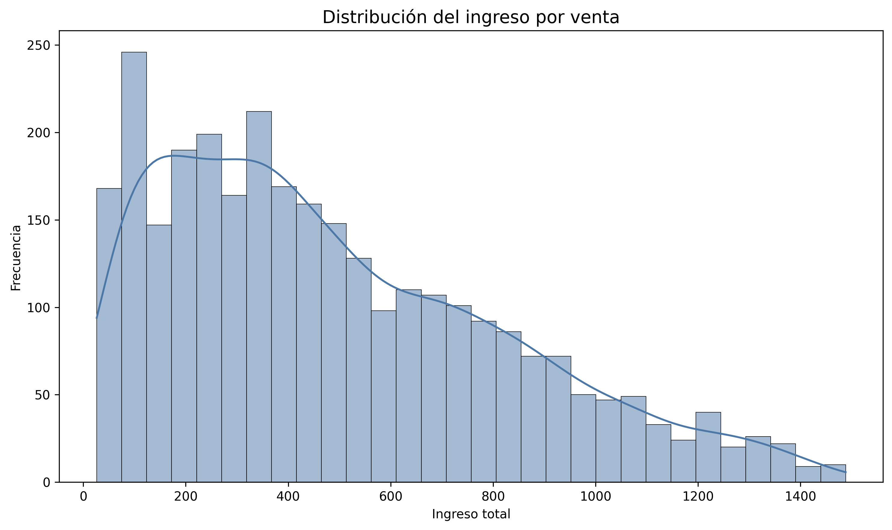
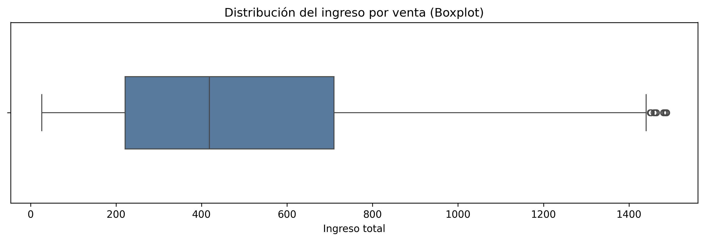
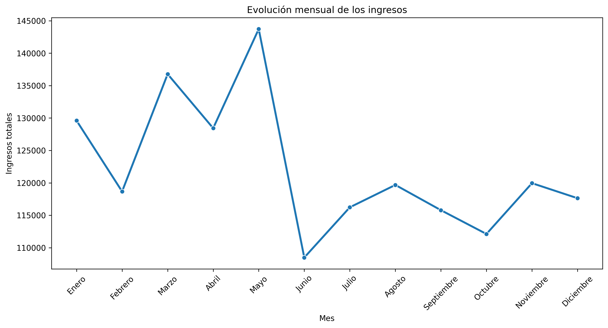
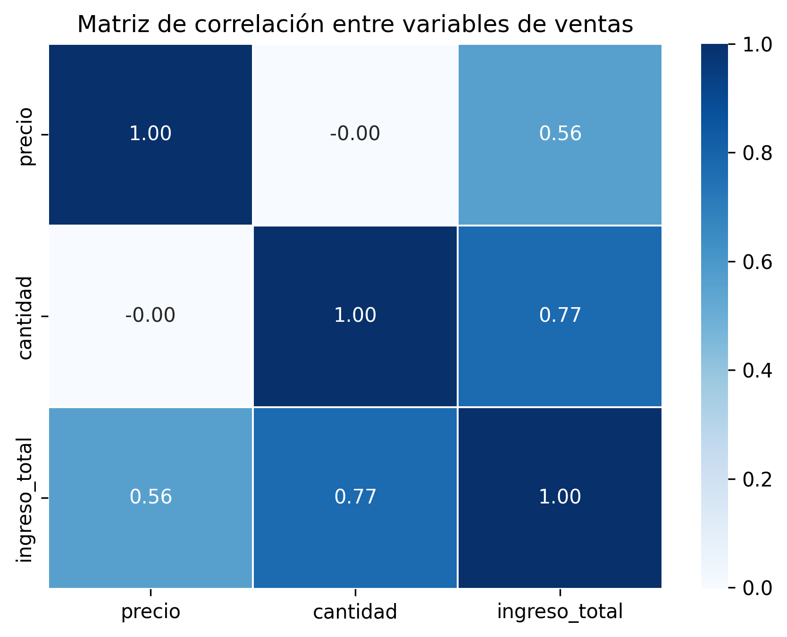

📌 Resumen del proyecto
Proyecto de análisis exploratorio de datos aplicado a ventas, clientes y campañas de marketing.
Se desarrolló un flujo completo incluyendo limpieza, transformación, integración, análisis estadístico, correlación y visualización.
📈 Métricas principales
2998
Registros analizados
3
Datasets utilizados
15+
Variables analizadas
5
Visualizaciones
🛠 Tecnologías utilizadas
Python
Pandas
NumPy
Matplotlib
Seaborn
Plotly
Google Colab
GitHub
🔎 Principales hallazgos
- La cantidad vendida presentó la mayor relación con los ingresos (0.77).
- El precio presentó una correlación positiva moderada (0.56).
- Se identificó un cambio de tendencia desde mayo.
- Las campañas aumentan el volumen comercial, aunque el ingreso promedio permanece estable.
📊 Visualizaciones





🌐 Repositorio
💻 Ver proyecto en GitHub👨💻 Autor
Franco Mamani Ramírez
Estudiante de Tecnicatura Superior en Ciencia de Datos e Inteligencia Artificial.